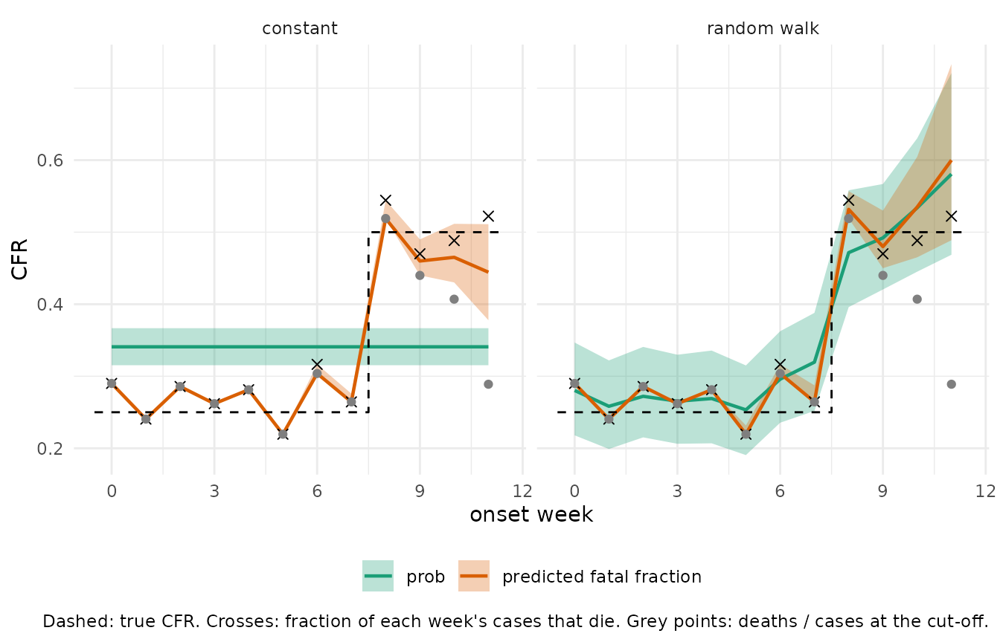
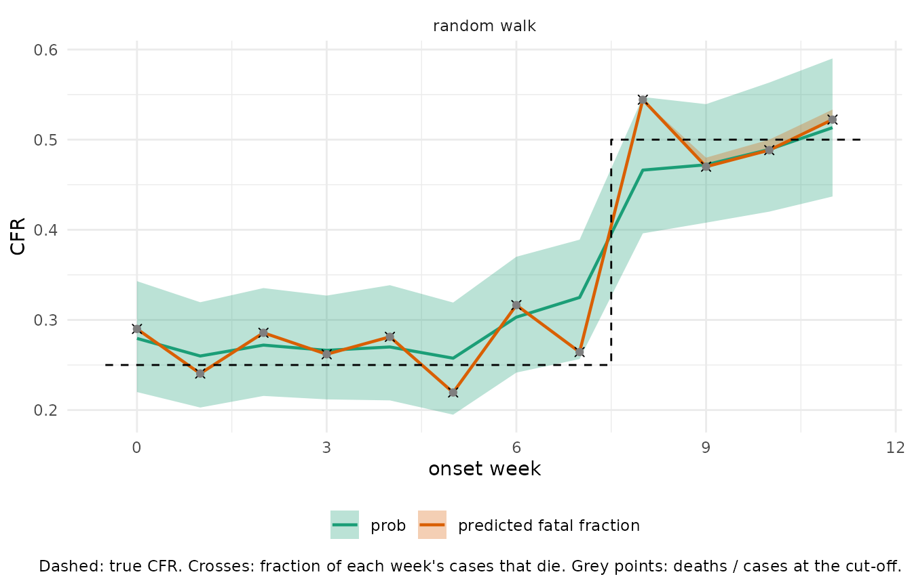

The case fatality ratio often changes during an outbreak, as the population affected, the pathogen or the care available changes. This vignette looks at two estimates of the CFR for each week of onset:
-
prob, the probability of death that the fitted model gives a case from that week, estimated byfit_cfr(); - the predicted fatal fraction, the fraction of that week’s cases
expected to die given what has been observed about them so far, built
from
posterior_prob_death().
We compare them on a simulated outbreak whose CFR rises late. One
model has a constant prob; in the other, prob
follows a random walk over onset weeks. We fit both one week after the
last onset, then refit the random walk six weeks after it. The
simulation is the simplest setting: deaths only, no recorded recoveries,
no loss to follow-up and one cut-off for all cases. “Other settings”
below covers what changes otherwise.
Simulation setup
Onsets are spread over twelve weeks. The true CFR is 0.25 up to week 7 and 0.5 from week 8. The onset-to-death delay is lognormal with a mean of about 13 days.
library(cfrnow)
library(data.table)
library(ggplot2)
set.seed(20260930)
n <- 1000
onset_start <- as.Date("2026-01-01")
true_cfr <- function(week) ifelse(week >= 8, 0.5, 0.25)
onset_day <- sample.int(12 * 7, n, replace = TRUE) - 1
onset_date <- onset_start + onset_day
week <- onset_day %/% 7
fatal <- runif(n) < true_cfr(week)
death_date <- as.Date(rep(NA, n))
death_date[fatal] <- onset_date[fatal] +
floor(runif(sum(fatal)) + rlnorm(sum(fatal), 2.41, 0.51))
ll <- data.frame(onset_date = onset_date, death_date = death_date)
# the true CFR and the fraction of each week's cases that die
truth <- data.table(week = week, fatal = fatal)[
, .(realised = mean(fatal)),
keyby = week
][, true_cfr := true_cfr(week)]Fitting a constant and a random-walk model
prepare_cfr_data() classifies each case at a cut-off,
here one week after the last onset. as_epidist_cure_model()
turns the result into one row per case, to which we add the onset week
as a factor. In the random-walk model, each week’s prob (on
the logit scale) stays close to the weeks either side of it, with the
data deciding how close. brms fits this as a Markov random field smooth
(bs = "mrf") whose neighbour list links each week to the
next. A week with few resolved cases follows its neighbours with a wide
interval, because its own cases say little yet.
prepare <- function(cut) {
cure <- prepare_cfr_data(ll, obs_time = max(ll$onset_date) + cut) |>
as_epidist_cure_model()
cure$week <- as.numeric(cure$onset - onset_start) %/% 7
cure$week_factor <- factor(cure$week, levels = weeks)
cure
}
weeks <- 0:11
neighbours <- lapply(weeks, \(w) as.character(intersect(c(w - 1, w + 1), weeks)))
names(neighbours) <- weeks
random_walk <- brms::bf(
mu ~ 1, prob ~ s(week_factor, bs = "mrf", xt = list(nb = neighbours))
)
onset_to_death <- LogNormal(
meanlog = Normal(2.4, 0.2), sdlog = Normal(0.5, 0.15)
)
fit <- function(cure, formula) {
fit_cfr(cure,
delay = onset_to_death, formula = formula,
backend = "cmdstanr", chains = 4, cores = 4, refresh = 0, seed = 1
)
}
early <- prepare(7)
fit_constant <- fit(early, brms::bf(mu ~ 1, prob ~ 1))
fit_random_walk <- fit(early, random_walk)Weekly estimates from per-case draws
A fit_cfr() fit is a brms model, which brms tools work
on. brms::posterior_epred(fit, dpar = "prob") gives the
draws of prob for every case.
posterior_prob_death() gives the draws of each case’s
probability of death. A recorded death counts as 1. A case still
unresolved at the cut-off has its prob updated by the time
passed since symptom onset: the longer ago symptoms began, the lower its
probability.
For the predicted fatal fraction, we draw each case’s outcome from its probability, once per posterior draw, and take the fraction of fatal outcomes in each week. Its median is close to the average of the probabilities. Its interval also covers whether each unresolved case dies. The function below returns both estimates for each onset week, as medians with 90% intervals.
weekly_estimates <- function(fit) {
week <- as.numeric(fit$cfrnow$onset - onset_start) %/% 7
prob <- brms::posterior_epred(fit, dpar = "prob")
pi <- posterior::as_draws_matrix(posterior_prob_death(fit))
fatal <- matrix(rbinom(length(pi), 1, pi), nrow(pi))
draws <- data.table(
draw = seq_len(nrow(pi)), week = rep(week, each = nrow(pi)),
prob = as.vector(prob), nowcast = as.vector(fatal)
)
by_week <- draws[, .(prob = mean(prob), nowcast = mean(nowcast)),
by = .(draw, week)
]
melt(by_week, id.vars = c("draw", "week"), variable.name = "quantity")[
, .(
median = median(value), lower = quantile(value, 0.05),
upper = quantile(value, 0.95)
),
keyby = .(quantity, week)
]
}
set.seed(1)
estimates <- rbind(
data.table(cutoff = "early", model_name = "constant",
weekly_estimates(fit_constant)),
data.table(cutoff = "early", model_name = "random walk",
weekly_estimates(fit_random_walk))
)
plot_weekly <- function(cut, cure) {
est_cut <- estimates[cutoff == cut]
est_cut[, quantity := factor(quantity,
levels = c("prob", "nowcast"),
labels = c("prob", "predicted fatal fraction")
)]
naive <- as.data.table(cure)[, .(naive = mean(outcome == 1)), keyby = week]
ggplot(est_cut, aes(week)) +
geom_ribbon(aes(ymin = lower, ymax = upper, fill = quantity), alpha = 0.3) +
geom_line(aes(y = median, colour = quantity), linewidth = 0.8) +
# repeat the last week so the step also spans it
geom_step(
data = rbind(truth, truth[.N][, week := week + 1]),
aes(x = week - 0.5, y = true_cfr), direction = "hv", linetype = "dashed"
) +
geom_point(data = truth, aes(y = realised), shape = 4, size = 2) +
geom_point(data = naive, aes(y = naive), colour = "grey50") +
facet_wrap(~model_name) +
scale_colour_brewer(palette = "Dark2") +
scale_fill_brewer(palette = "Dark2") +
labs(
x = "onset week", y = "CFR", colour = NULL, fill = NULL,
caption = paste(
"Dashed: true CFR. Crosses: fraction of each week's cases that die.",
"Grey points: deaths / cases at the cut-off."
)
) +
theme_minimal() +
theme(legend.position = "bottom")
}Estimates one week after the last onset
plot_weekly("early", early)
The naive ratio (grey) falls away in the last weeks, because most of their deaths have yet to happen: 0.29 in week 11, against the 0.52 of that week’s cases that die.
Up to week 7, the predicted fatal fraction is the same under both models and has almost no uncertainty. Nearly every case from those weeks has died or has been followed long enough to be a near-certain survivor. The prediction is then the realised fraction, including its chance variation around the true CFR. Weeks 8 and 9 still have some unresolved cases, which gives their predictions a narrow interval.
The models differ most in weeks 10 and 11. Their cases are largely
unresolved, which keeps the probabilities for those cases close to their
prob:
- The constant model’s
probof 0.34 is an average over the whole outbreak, before and after the step. It pulls the prediction for week 11 down to 0.44 [0.38, 0.51]. - The random walk’s
probfor week 11 is 0.58 [0.47, 0.72]. With few resolved cases in that week, it stays close to week 10, with a wide interval. The prediction for week 11 is 0.60 [0.49, 0.73].
Estimates six weeks after the last onset
late <- prepare(42)
fit_random_walk_late <- fit(late, random_walk)
estimates <- rbind(
estimates,
data.table(cutoff = "late", model_name = "random walk",
weekly_estimates(fit_random_walk_late))
)
plot_weekly("late", late)
Five more weeks of follow-up give nearly every fatal case time to die
and make the survivors near-certain. The predicted fatal fraction is now
close to the realised fraction in every week, with almost no
uncertainty. The naive ratio has caught up with it. prob
keeps an interval, because it estimates the underlying CFR. More
follow-up has narrowed it, to 0.51 [0.44, 0.59] for week 11.
Other settings
In other settings only the data preparation and the
fit_cfr() call change. The code for the weekly estimates
stays the same, because posterior_prob_death() reads the
fit’s own settings:
- With recorded recoveries (a
recovery_datecolumn and arecovery_delay), an unresolved case’s probability is updated with both delays. It moves towards 0 or 1 sooner, which makes the recent weeks lean less onprob. - With a
loss_prior, a case followed well past both delays settles at a value set by each outcome’s chance of being lost. Its outcome stays uncertain. - With per-case cut-offs or a
last_contact_date, each case is updated with its own follow-up.
Interpreting the two estimates
prob is the model’s CFR for a case from that week. With
a constant formula it is one number for the whole outbreak. With a
random walk, each week’s value rests on that week’s resolved cases and
on its neighbours. For the latest weeks, which have few resolved cases,
it mostly follows the week before.
The predicted fatal fraction estimates the fraction of that week’s
cases that die. For a recorded death it uses what happened. For a case
still unresolved it uses the model’s prob, lowered by the
time passed since symptom onset. Its interval covers the model’s
parameters and whether each unresolved case dies, but it assumes the
model is right. For the latest weeks it is only as good as the model’s
prob for those weeks. Once the fatal cases have died and
the survivors have been followed well past the delay, the interval is
close to zero width, even though the underlying CFR is still
uncertain.